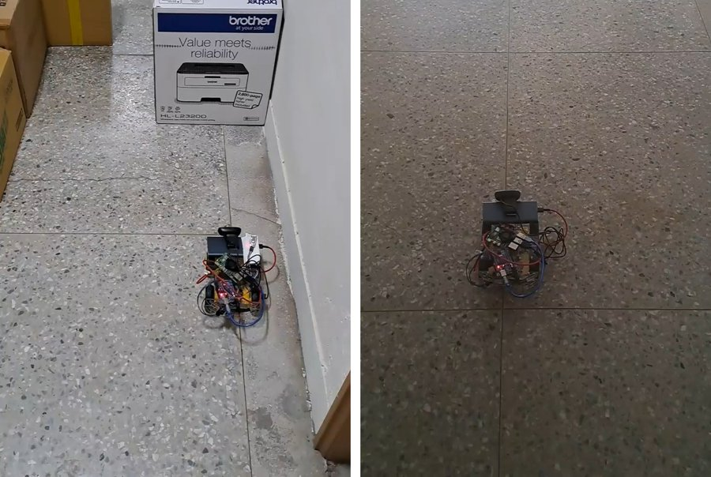
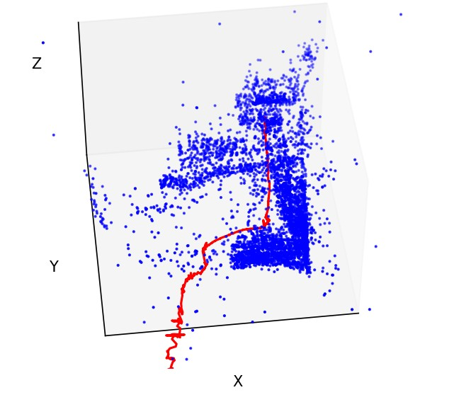
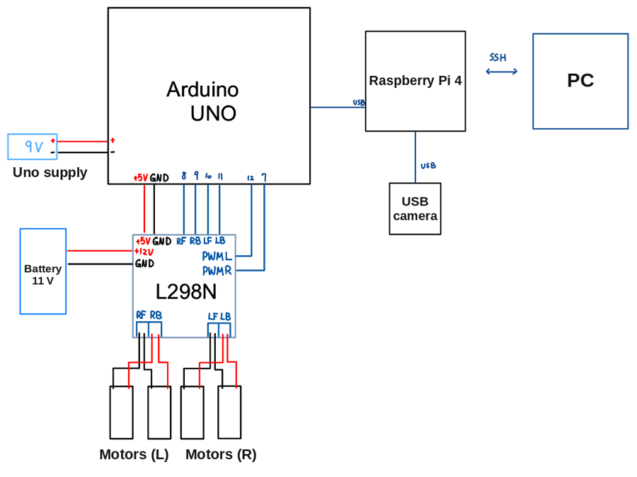
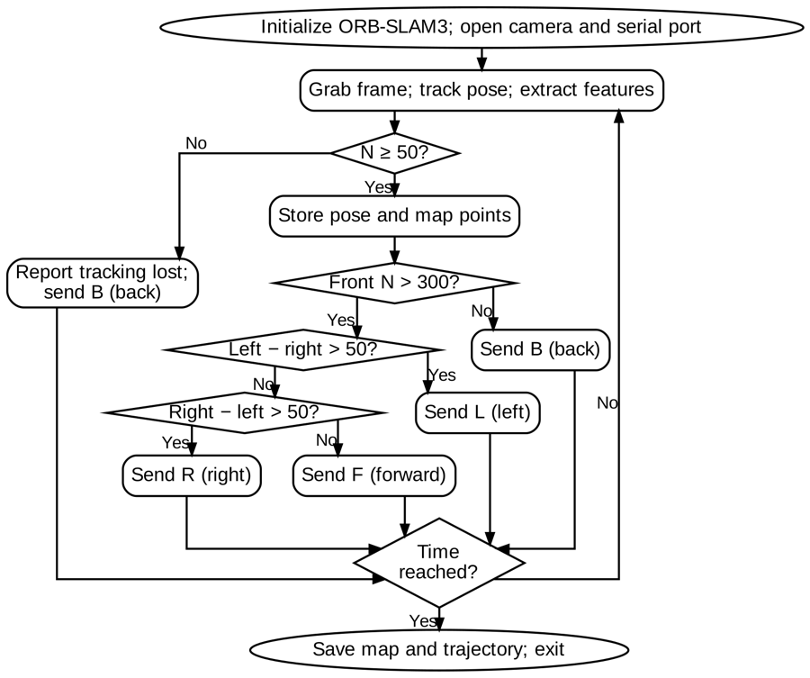
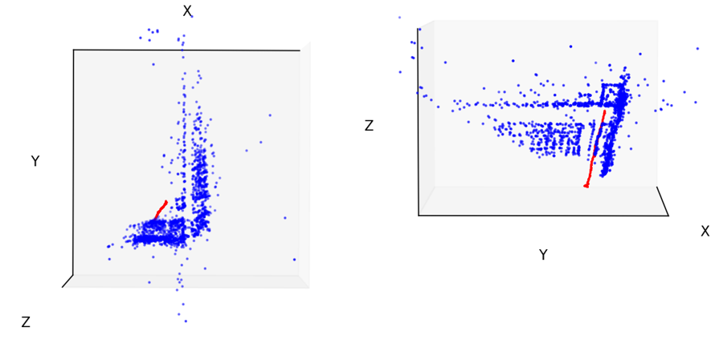

Indoors, underground or in a collapsed building, a robot has no GPS but still needs a map and its own position. We ran monocular ORB-SLAM3 on a Raspberry Pi 4 robot built from on-hand hardware, with a single USB camera as its only sensor, and used the SLAM output to steer the robot.
The Raspberry Pi runs ORB-SLAM3 for feature tracking, pose estimation and mapping. It sends one-letter commands (forward, back, left, right) over USB serial to an Arduino UNO, which drives the left and right motor pairs through an L298N H-bridge. We calibrated the camera with a checkerboard in OpenCV and wrote the intrinsics and distortion into the ORB-SLAM3 configuration.

Monocular SLAM can only localize where it sees enough texture. A plain wall, a reflective floor or a close obstacle leaves too few features, and tracking is lost. So we used the number of tracked ORB features, and how they split between the left and right halves of the image, as the navigation signal:
This keeps the camera pointed at trackable scenery.

